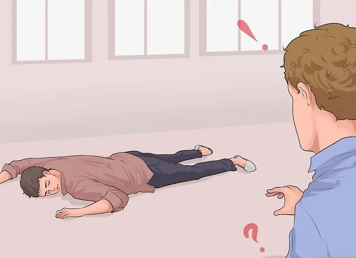
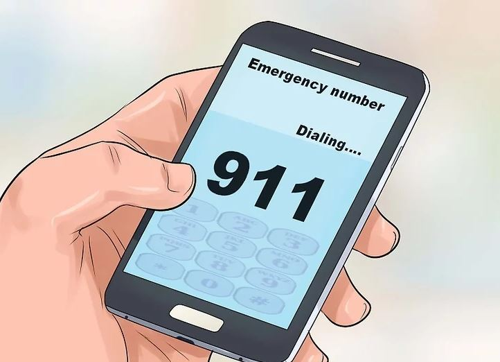
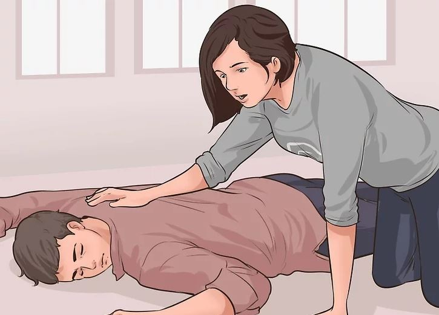

Basic First Aid
METHOD 1: Performing the Three Cs

1. Check the surroundings.
Evaluate the situation. Are there things that might put you at risk of harm? Are you or the victim threatened by fire, toxic smoke, gasses, an unstable building, live electrical wires, or another dangerous scenario? Do not rush into a situation where you could end up as a victim yourself. This refers to the D (Danger) in DRABC (Danger, Response, Airways, Breathing, and Circulation).
If approaching the victim will endanger your life, seek professional help immediately; they have higher levels of training and know-how to handle these situations. First aid becomes useless if you can't safely perform it without hurting yourself.

2. Call for help.
Call out for help 3 times before you begin assisting the casualty. If someone is with you or approaches, instruct them to call the authorities and be prepared to relay information to them so they can update the responders. It is not recommended that you leave the casualty unless required, but put them in the recovery position if you need to leave them for any reason

3. Care for the person.
Caring for someone who has just gone through serious trauma includes both physical treatment and emotional support. Remember to stay calm and try to be reassuring; let the person know that help is on its way and that everything will be alright. Other ways to reassure the casualty include asking for their name, if they know what has happened, and then about their interests.
NEXT